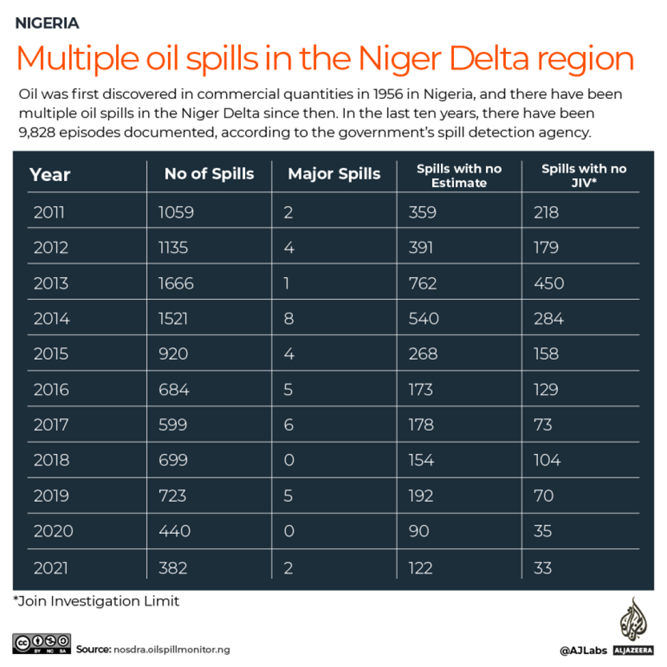
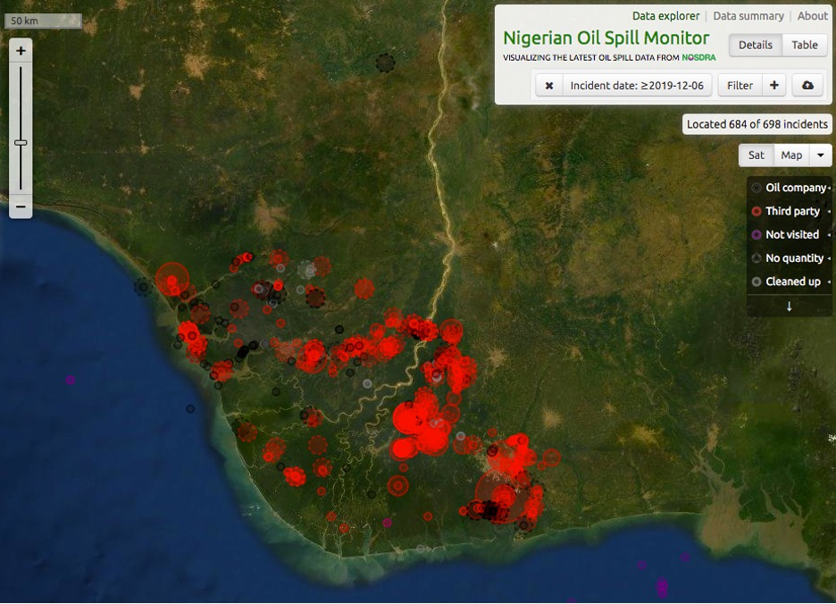

Niger Delta oil spills bring poverty, low crop yields to farmers.
Industry insiders say six decades of oil exploration have made the Niger Delta one of the most polluted places on earth and damaged a lot, including farmlands.
Nigeria: Air Pollution - 31 August 2018 [Shola Ogundipe/Vanguard]

-Source [nosdra.oilspillmonitor.ng]
Yenagoa, Nigeria – This June, Aibakuro Warder was disappointed by the size of the yam and cassava tubers she harvested from her farms in Ikarama, a community in the southernmost Nigerian state of Bayelsa. Most were tiny and in some locations, there was no yield.
“This is what we have been dealing with since oil spills started,” the 51-year-old mother of five said. “It makes it difficult for me to feed my family and train my children in school because that is the only thing I do”.
Thirty years ago there were no spills, Warder recalls. Then she would go to the farm with her mother and grandmother. The harvest was always bountiful, she said, sometimes up to 20 bags and sometimes more. Yam tubers were huge and sometimes up to three feet (91 cm) tall, she said. And they sold every farm produce they took to the market and bought whatever they wanted on their way back, she added.
Now all of that has changed.
These days, Warder is forced to accept whatever amount buyers offer for her tubers at the market because the produce is tiny. And the proceeds are insufficient to buy basic items at the market for her children or cater to their education.
“It is better we don’t even cultivate because our crops die after planting and we must replant repeatedly,” she said. “As we dig the soil, we find crude oil during planting,”. “Some species of cocoyam have disappeared.”
She is not alone. Dominion Ibatou, 67 is yet to harvest anything from his farm in Ikarama because the plants are stunted. Washington Odoyibo, another farmer in the community, has waited for two years for his plantain seeds to yield, but they have not.
The Niger Delta region, home to more than 6.5 million people who depend on fishing and farming, has all-year-round agricultural production activities by virtue of being in the country’s rainforest and mangrove forest vegetative zones of Nigeria. But it also houses all of the deep oil and gas reserves that have accounted for more than 70 percent of Nigeria’s foreign revenue since the 1970s.
And industry insiders say six 60 years of oil exploration have turned it into one of the most polluted places on earth and ruined among other things, farmlands.
In 2015, research published in the International Journal of Environmental Sciences by scientists from the Federal University of Technology, Owerri in Imo – one of the states in the region – showed that an average of 150 spills had been recorded annually in the 60 years before.
In 2020 and 2021, Nigeria’s National Oil Spill Detection and Response Agency (NOSDRA) recorded a combined total of 822 oil spills, resulting in 28,003 barrels spewing into the environment. Last December, a month-long spill in Nembe community in Bayelsa led to youths protesting there and in the streets of the capital Yenagoa. These repeated spills and their effect on crop yields have led to a decline in local food production and deepened poverty in communities in the Niger Delta.
“This has contributed to an increase in the price of food,” said Nnimmo Bassey, an environmental rights activist and director of the Health of Mother Earth Foundation (HOMEF). “Quality of food consumed has also been affected”.
-November 15, 2012 [Tife Owolabi/Reuters]

-Source [Acme Environmental]
-Source [Safety4sea.com]
In Goi in neighbouring Rivers State, community leaders say crude oil seeps out of the fermented cassava as it is processed by local women making the staple meal of garri, rendering it unsafe for consumption. In 2021, a Dutch court ordered the Nigerian subsidiary of Shell to compensate four farmers from Oruma in Ogbia in Bayelsa who had instituted a case against the company for a 2008 oil spillage they say affect their farms and yields.
One hotspot is Ikarama, a fishing and farming community in Bayelsa state, with an estimated population of 50,000 people. According to Morris Alagoa, Yenagoa-based head of field operations, Environmental Rights Action/Friends of Earth Nigeria (ERA/FoEN), it has the highest frequency of oil spill incidents in the state. While there is no accurate data on the number of spills in the community, Alagoa says at least 100 spills have been recorded between 2007 and 2022. Between June and December 2008 alone, five oil spills from Shell’s facility were recorded in Ikarama. In 2011, at least twelve oil spills and two fire outbreaks were reported in the community. “Ikarama has lost its place as a food hub,”, Charles Oyibo, a lecturer at the department of Geography and Environmental Management at the Niger Delta University. He said his unpublished research shows that most of the food items sold at the Ikarama market, come from other communities.
The oil companies operating there are Shell Petroleum Development Company [SPDC] and Nigerian Agip Oil Company [NAOC/Eni]. Alagoa alleges that most of these spills were from SPDC pipelines close to residential buildings and farmlands. Other spills have also occurred along Agip pipelines. While SPDC claims that the spill sites in Ikarama have been cleaned and remediated in accordance with industry standards, civil society groups say they have documented testimonies from locals, with indications to the contrary. “We visited one of the locations where oil spills occurred in August 2021 and after we cleared and dug a fresh spot, we discovered crude oil at a depth of more than one metre (100cm), “Alagoa recalled.
Third-party interference
Locals have linked most of the spills – including that of April 2021, when one of the pipelines operated by the SPDC discharged 213 barrels of crude oil into Ikarama – to equipment failure. But the company often blames illegal third-party interference (sabotage). Locals say they have always wanted to protest for a proper clean-up but Ibatou claims that they are often intimidated by the presence of security operatives in the community. Oyibo told Al Jazeera that some locals are in cahoots with oil companies, hence the continued spills and no efforts to curb it. “Until the community realises that their livelihoods depend on their lands, they will continue to allow a few people to benefit at their instance,” he said, adding that those with polluted farmlands are too scared to protest. And now, Warder and her peers say they are now considering trading options as an alternative source of livelihood. Some of them now hew firewood from nearby bushes to sell. “I have been looking for how to get soft loans from the government or any organisation that will be willing to help me because I can’t go back to farming,” said Warder.
SOURCE: AL JAZEERA
Niger Delta communities in ‘great danger’ as month-old oil spill continues
by Mongabay on 6 December 2021
Photo: Sosialistisk Ungdom/Flickr, CC BY-ND 2.0

Map of incident reports in the Niger Delta since June 2019, courtesy
NOSDRA.
- Oil has been spilling from a wellhead in Nigeria’s Bayelsa state for a month now, with the local company responsible unable to contain it.
- Experts say the scale and duration of the spill is so severe that it’s imperative that local communities be relocated for their safety.
- Oil spills and other forms of pollution caused by the industry are common in Bayelsa, the heart of the oil-rich Niger Delta.
- Companies, including foreign oil majors, are largely left to self-declare the spills that frequently occur, but face only token fines for failing to respond quickly.
Crude oil from a blowout has been pouring into creeks in the Niger Delta since Nov. 5, with the well’s owner, Nigerian energy firm Aiteo, unable to contain the spill and specialists called in to help.
The blowout, at a non-producing well in the Santa Barbara field in Bayelsa state, has caused extensive pollution of rivers and farmland in the Nembe local government area, according to the state governor, Douye Diri. According to the News Agency of Nigeria, he said Aiteo should not think that “this criminal neglect of its facilities and disregard for human life and the environment, as demonstrated by its conduct, will not be accounted for.”
In a statement released Nov. 22, the company blamed the incident on sabotage. “Aiteo remains committed to ascertaining, immediately the well head is secure, the immediate and remote causes of the leak which will be driven by a [joint investigative visit] that will follow,” it said.
The oil industry in Nigeria attributes many oil spills to sabotage by people trying to steal crude. Nigeria’s National Oil Spill Detection and Response Agency (NOSDRA), which relies almost entirely on the industry itself for access to on- and offshore oil facilities, reports that around 75% of spills are caused by sabotage and theft.
The joint team initially despatched to the Nembe spill was unable to determine the cause of the spill, as the wellhead could not be accessed “due to hydrocarbon fumes that saturated the atmosphere in the area.” A video of the spill site, captured Nov. 29, showed a high-pressure stream of brownish liquid spraying through the creeks from a wellhead as technicians worked on the site.
The scale of the spill has overwhelmed local disaster response capabilities, and U.S.-headquartered oil-well control specialist Halliburton Boots and Coots has been drafted in to “kill the well,” a process that involves injecting cement into the well to plug it.
“Work is still ongoing at the site to stop the spill,” NOSDRA director-general Idris Musa told Mongabay last week, but all activities around the well were temporarily suspended Nov. 29 to allow the well-kill operation to proceed.
Decades of destruction
The Niger Delta is rich in biological diversity and natural resources. Its creeks, swamps and mangrove forests are home to fishing and farming communities as well as threatened species including manatees (Trichechus senegalensis), chimpanzees (Pan troglodytes ellioti), and the Niger Delta red colobus (Piliocolobus epieni).
But decades of oil production have made the region one of the most polluted places on Earth. NOSDRA recorded 639 oil spills in just the past two years, resulting in 28,003 barrels spewed into the environment, according to the agency’s data.
Bayelsa is where oil was first discovered in Nigeria, in 1956. In the decades since, oil spills from wells and pipelines have contaminated farmland and water bodies, and exposed residents to toxic chemicals. Flaring of gas has led to acid rain falling on the area, while contributing to making Nigeria the 17th largest producer of greenhouse gas emissions in the world. This environmental destruction has been caused by oil majors including Shell, Chevron and Eni. The Nembe well was bought from Shell by Lagos-based Aiteo in 2015.
“It is extremely disturbing because the trend we are seeing now is that international oil companies know that their equipment are dilapidated, and to avoid responsibility, they move offshore and sell to gullible local companies who think they can make profit and are not ready or equipped to [deal with] this kind of emergencies,” said Nnimmo Bassey, an environmentalist and founder of the Health of Mother Earth Foundation (HOMEF), a prominent green NGO in Nigeria.
Consequences — just not for oil companies
The impact of the Nembe spill on local communities and the environment is still to be determined, but Samuel Oburo, an environmental activist affiliated with Friends of the Earth, who lives about 50 kilometers (30 miles) from Nembe, says villagers in the area have been badly impacted.
“I can tell you that the people there face great danger. They have started crying out. They have started experiencing strange illnesses due to the unfriendly atmosphere this spill has exposed the community to,” he told Mongabay over the phone.
But getting oil firms to clean up or pay for environmental crimes in Nigeria is difficult. Legal claims for compensation can take years, even decades, and companies are expected to pay relatively little in fines when they err.
NOSDRA’S regulations say oil companies have 24 hours to respond to the discovery of a spill. A joint visit by government agencies, company officials and community representatives should take place as soon as possible. But a 2018 study by Amnesty International found frequent delays, with some spills continuing for months after they were reported.
Shell, one of the largest operators in the country, visited spill sites within 24 hours on just 26% of occasions, Amnesty said. The slowest response time recorded was when Eni took 430 days to respond to a spill in Bayelsa state. “These delays point to serious negligence. Shell and Eni are wealthy, powerful multinationals: why can’t they act faster? Why can’t they do more?,” the report said.
But the penalties for noncompliance are negligible: 1 million naira ($2,400) for an initial default, and an additional 500,000 naira for every day after that.
“How much is N500,000 to an oil company?” NOSDRA’s Idris Musa said. An amendment increasing the fines is in progress.
Speaking to the ongoing spill at Nembe, HOMEF’s Bassey said that considering the apparent scale and duration of the latest spill, the safest option for residents of the area is to be relocated. “This area does not have pipe-borne water, and when the river is covered with crude oil, it means they have to depend on imported water,” he said. “Some may drink from that river because these areas are permanently polluted and they have no option. Children will swim in that river and people will drink from that river.”
“Crude oil contains very toxic heavy metals like lead; you know, lead affects a lot things concerning people, the nervous system, causes cancer. You have mercury in oil, you have cadmium, you have arsenic and benzene and many others,” he told Mongabay.

-Source [Mongabay on 6 December 2021]
“So anybody eating fish from that river is in trouble already. So the relief that they are giving, I believe they should actually evacuate people from that territory at this time.”. Oburo agreed: “So long as the spill continues, there is nothing that can be done to restore the air quality. The only solution is to evacuate those people from there because their lives are precious.”. Bayelsa government spokesperson Dan Alabrah said the state is providing relief materials to communities, but had no plans to relocate them.
No clean up, no justice: Shell’s oil pollution in the Niger Delta
Godwin Ojo, Environmental Rights Action/Friends of the Earth Nigeria
Friends of the Earth Europe, Amnesty International, Environmental Rights Action
In 2011 the UN Environment Programme (UNEP) released a report documenting the devastating impact of the oil industry in Ogoniland, and set out urgent recommendations for clean-up. But the new investigation highlights that “emergency measures” proposed by UNEP have not been properly implemented and that the billion-dollar clean-up project launched by the Nigerian government in 2016 has been ineffective.
Over five decades, oil and gas extraction have caused large-scale, continued contamination of the water and soil in Ogoni communities. The continued and systematic failure of oil companies and government to clean up have left hundreds of thousands of Ogoni people facing serious health risks, struggling to access safe drinking water, and unable to earn a living.
Numerous conflicts of interest around Shell have also been revealed involving the
management of the clean-up agency,
HYPREP, and the Nigerian government.
While oil companies like Shell spend millions greenwashing their image, tens of
thousands of people continue to suffer
from their pollution and negligence
~Colin Roche, Friends of the Earth Europe
This year, Shell is facing a series of European court battles over its business in Nigeria. On 23 June, the UK’s Supreme Court will hear an appeal brought by two Niger Delta communities, Ogale and Bille. They claim that over several years they have suffered systematic and ongoing oil pollution because of Shell’s operations. The court will decide whether it can proceed on the critical issue of whether Royal Dutch Shell (UK and Netherlands headquartered) is liable for the actions of its Nigerian subsidiary Shell Petroleum Development Company (SPDC).
Godwin Ojo, Environmental Rights Action/Friends of the Earth Nigeria said: “After nine
years of promises without proper
action and decades of pollution, the people of Ogoniland are not only sick of dirty
drinking water, oil-contaminated
fish and toxic fumes. They are sick of waiting for justice, they are dying by the day.
The Nigerian government should
acknowledge this project has been a failure and reinvigorate HYPREP with technical
skills and strategic thinking, fully
involving the community.”
Shell must not get away with this – we will continue to fight until every last trace of
oil is removed from Ogoniland.
~Osai Ojigho, Director of Amnesty Nigeria
Colin Roche, Friends of the Earth Europe said: “Nine years on, there is still no clean-up, no ‘emergency’ health and water measures, no transparency and no accountability. Without urgent action there will be no justice. While oil companies like Shell spend millions greenwashing their image, tens of thousands of people continue to suffer from their pollution and negligence. European governments like the UK, the Netherlands, France and Italy must act to support a truly effective clean-up and ensure these companies are held accountable for the devastating pollution of the Niger Delta.”
Osai Ojigho, Amnesty International Nigeria, said: “The discovery of oil in Ogoniland has brought huge suffering for its people. Over many years we have documented how Shell has failed to clean up contamination from spills and it’s a scandal that this has not yet happened. The pollution is leading to serious human rights impacts – on people’s health and ability to access food and clean water. Shell must not get away with this – we will continue to fight until every last trace of oil is removed from Ogoniland.”
Key findings of the report include:
Work has begun on only 11% of polluted sites identified by UNEP, with only a further 5% included in current clean-up efforts, and no site has been entirely cleaned up;
Actions classified by UNEP as “emergency measures” – immediate action on drinking water and health protection – have not been implemented properly; there are still communities without access to clean water supplies; • Health and environmental monitoring has not been carried out;
There has not been any public accounting for how the 31 million USD funding provided since 2018 has been spent;
11 of 16 companies contracted for the clean-up are reported to have no registered expertise in oil pollution remediation or related areas; HYPREP has numerous conflicts of interest as Shell continues to be involved in the governing boards for the clean-up and even places its own staff in HYPREP.
The organisations demand a rapid clean-up and in particular that the Nigerian government:
makes sure that Ogoni people can access their basic rights including the right to safe drinking water develops and implements a strategy to address the root causes of oil pollution, while fully involving local communities strengthens HYPREP and ensures it is an independent, transparent agency without involvement of Shell in oversight and management structures publishes all information on the clean-up project and its progress
provides proper compensation to all communities affected by failed or delayed clean-ups of oil spills decommissions all aging and damaged pipelines commits to funding the clean-up of Ogoniland and the rest of the Niger Delta until completed that European governments home to oil companies operating in the Niger Delta: makes a fundamental shift to prioritise the clean-up of Ogoniland and the rest of the Niger Delta over the interests of companies increases engagement with and support for the Nigerian government to ensure effective implementation of UNEP’s recommendations, independent oversight of the oil industry and effective remedy for affected communities establishes strong international regulations for corporate liability abroad – such as an EU law for mandatory Human Rights due diligence and a binding UN Treaty on Business and Human Rights.